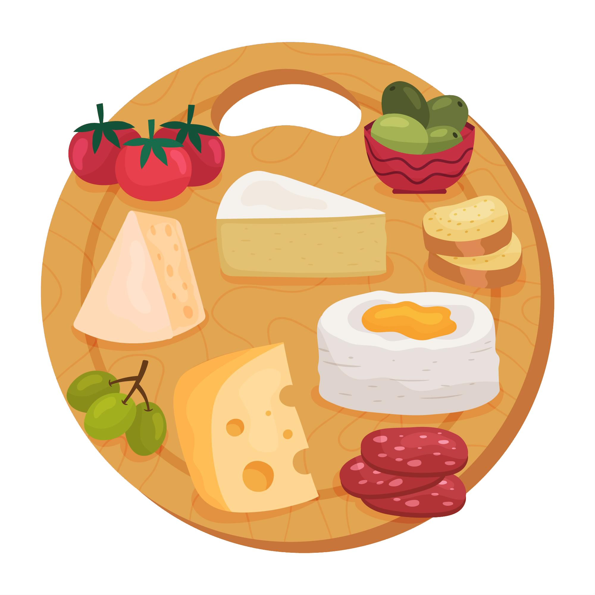
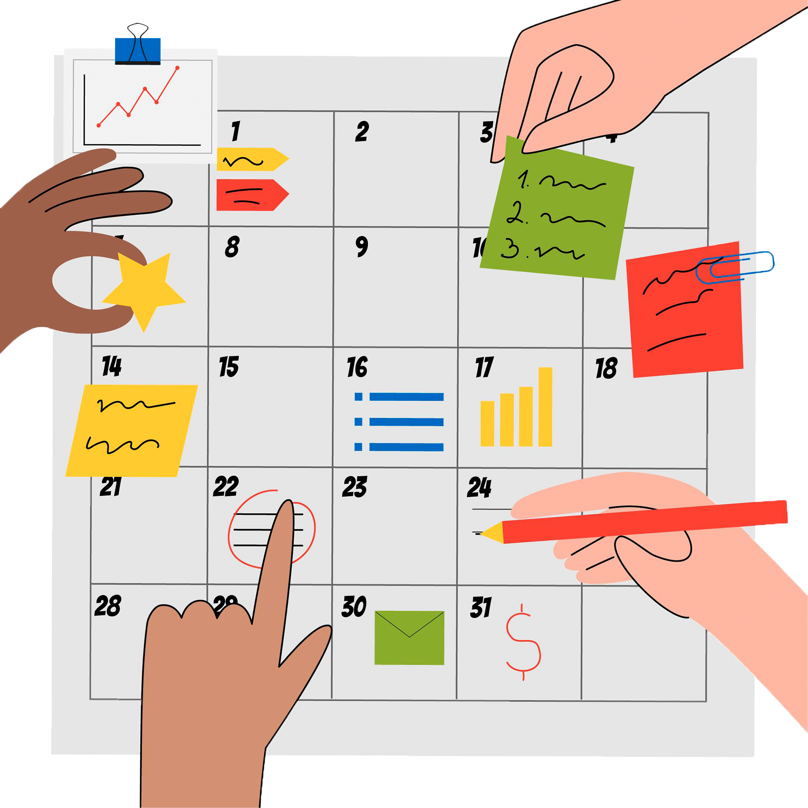

|  |
Tem combinações que valem a pena!
Já pensou usar mais de uma classificação? Assim como goiabada combina com queijo, há métodos que combinam com técnicas e ferramentas. Isso de chama TRIANGULAÇÃO uma estratégia onde você combina várias técnicas para melhorar os resultados e fazer uma pesquisa com excelência. Explore esse catálogo, estude seu produto e não se prenda a apenas 1 método ou técnica.
|
|  |
Prazo curto? Projete e execute em 5 dias!
Já pensou planejar, decidir a ideia, esboçar, prototipar e testar as ideias com usuários em 5 dias? Parece uma loucura, mas esse é o DESIGN SPRINT, que nasceu no Google onde é possível validar suas ideias e encurta o processo para 40 horas.
|